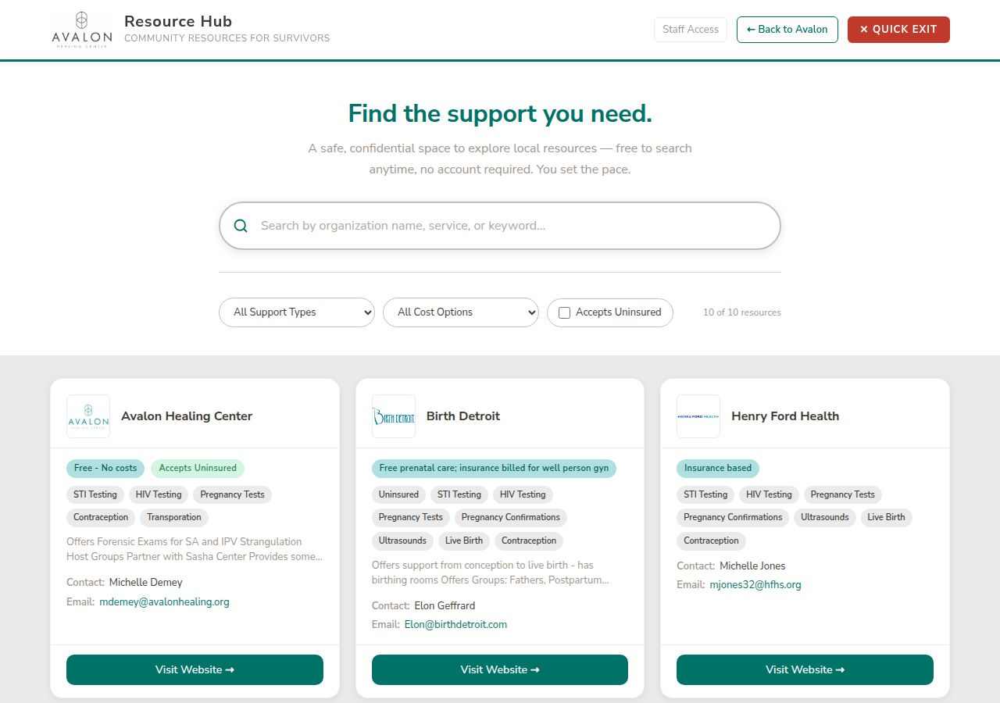
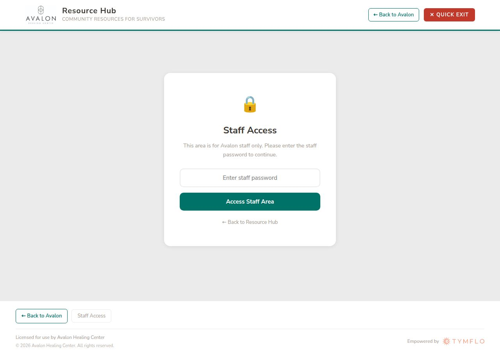

How to manage the community resource directory
For Authorized Staff OnlyThe Avalon Resource Hub is a community directory that helps survivors find local health and support organizations. It lives at:
The site has two areas:
Anyone can visit and search resources — no login, no account needed. This is what clients see.
Password-protected. Only Avalon staff can add, edit, remove, or approve organizations in the directory.
All resource information is stored in Airtable. When staff make a change in the Hub, it updates Airtable immediately. The public view refreshes automatically.
When a client visits the Resource Hub, they see a clean search page with all approved organizations listed as cards.

Search box — Type any word (organization name, service type, or keyword) to filter the list instantly.
Support Type dropdown — Filter by service category (STI Testing, HIV Testing, Pregnancy Tests, etc.).
Cost Options dropdown — Filter by cost structure (Free, Insurance Based, Sliding Scale, etc.).
Accepts Uninsured checkbox — Check this to show only organizations that serve uninsured clients.
At the bottom of each organization's detail modal, there is a discreet link: "Is this your organization? Request an update to this listing →"
This lets providers submit corrections to their own listing. The request goes to Avalon staff for review — nothing changes publicly until a staff member approves it. Approved edit requests appear on the Approve Organizations tab (see Section 6).
Clients never need an account or login. They can use the Quick Exit button in the top-right corner at any time to instantly leave the page for their safety.
The Staff Area is password-protected. Only people with the staff password can access it.
Visit avalon.tymflo.com, then click the "Staff Access" button in the top navigation bar (desktop) or at the bottom of the page (mobile).
You will see the Staff Access login screen shown below.
Type the staff password into the box and click "Access Staff Area."
If the password is correct, you will be taken directly into the staff dashboard.

Do not share the staff password with clients or post it anywhere publicly. If you believe the password has been compromised, contact your Avalon administrator to have it changed.
Contact the person who set up the Resource Hub for you, or reach out to TymFlo at tymflo.com for support.
When you are finished, click "Log Out" at the top-right of the Staff Area, or simply close the browser tab. Your session is not stored — the next person who opens the page will need to log in again.
Once logged in, you will see four tabs across the top of the Staff Area:
| Tab | What it does |
|---|---|
| + Add Organization | Create a brand-new listing from scratch |
| ✎ Edit Organization | Update an existing listing's information |
| Remove Organization | Hide or restore a listing from the public view |
| ✓ Approve Organizations | Review and approve new provider applications and edit requests — shows a live badge count of pending items |
Use this tab when you want to add a resource that has already been vetted by Avalon staff.
Make sure you are on the "+ Add Organization" tab (it is the default when you first log in).
Fill in the organization details. Fields marked with a * red star are required.
Under "Support Options," check all the services this organization provides. You must select at least one.
Check the "Approved by Avalon" checkbox to confirm this organization has been vetted.
Optionally upload a logo image — PNG or JPG, ideally square.
Click "Add Organization." A green confirmation message will appear and the listing will be live within a minute.
| Field | Description | Required? |
|---|---|---|
| Organization Name | Full name as it will appear publicly | Required |
| Website | Full URL starting with https:// | Required |
| Primary Email | Main contact email for this organization | Required |
| Contact Person | Name of the main contact at the organization | Optional |
| Secondary Email | Additional contact email | Optional |
| Cost Structure | How costs work — select all that apply | Optional |
| Accepts Uninsured | Whether they serve clients without insurance | Optional |
| Support Options | Services provided — check all that apply | At least 1 |
| Notes | Any additional helpful information for clients | Optional |
| Logo | Organization logo image (PNG or JPG) | Optional |
| Approved by Avalon | Confirms this resource has been reviewed by staff | Required |
After a successful submission, the form clears automatically so you can add another organization right away. The new listing appears in the public hub after the data refreshes (within 60 seconds).
Use the Edit Organization tab to correct or update information on an existing listing — for example, a new phone number, updated website, or changed services.
Log in and click the "✎ Edit Organization" tab.
A list of all active organizations appears. Use the search box to find the one you want to edit.
Click "Edit" on that organization's card. The form will open, pre-filled with all the current information.
Make any changes needed — you can update any field including support options, costs, notes, and contact details.
Click "Save Changes." A green confirmation will appear and the changes go live immediately.
Unlike adding a new organization, edits made by staff go live right away — no approval step needed. The Airtable record is updated immediately.
When a provider submits a "Request an Update" from the public site, it does NOT go live automatically — it comes to the Approve tab for your review first. Only edits made by logged-in staff in this tab go live immediately.
The ✓ Approve Organizations tab is your review queue. It shows two types of pending items, each in its own sub-section. A badge on the tab tells you how many items are waiting — it updates as soon as you log in.
When a provider fills out the "Become a Resource Provider" form on the public site, their submission lands here as an unapproved record. It is not visible to the public until you approve it.
Click the "✓ Approve Organizations" tab.
Under "Approve New Organization," review the details on each card — name, website, email, contact, and services.
If the organization is appropriate for the directory, click "✓ Approve." It will go live on the public hub immediately.
If it is not appropriate, you can leave it (it stays hidden) or remove it using the Remove tab.
When a provider clicks "Is this your organization? Request an update →" on their listing and submits a change, that listing is temporarily hidden from the public and placed here for your review.
Under "Approve Edit Request," review the updated information the provider submitted.
Compare the proposed changes with what you know about the organization.
If the changes look correct, click "✓ Approve." The updated listing goes live immediately and the "EDIT REQUEST" marker is removed from the Notes field automatically.
If the changes look wrong or suspicious, do not approve. Contact the organization directly to verify before approving.
When a provider submits an edit request, their listing is temporarily unpublished until you approve it. Try to review edit requests promptly so the organization does not stay off the public hub for long.
The number on the Approve tab (e.g., ✓ Approve Organizations 2) shows the total of new applications plus edit requests waiting for review. It appears as soon as you log in — you don't need to click the tab first.
If an organization is no longer appropriate for the directory, you can remove it from the public view. It is never permanently deleted — you can always restore it later.
After logging in, click the "Remove Organization" tab at the top of the Staff Area.
The tab will load all current resources. Scroll to find the organization you want to remove.
Click the red "Remove" button on the organization's card. A confirmation prompt will appear.
Click "Yes, Remove" to confirm. The organization will immediately disappear from the public view.
On the same "Remove Organization" tab, removed organizations are shown with a gray "Hidden" badge.
Find the organization you want to bring back and click the green "Restore" button.
The organization will reappear in the public hub immediately.
Removing an organization only hides it from the public view. All the information is preserved in Airtable and can be restored at any time using the Restore button.
Once you click "Yes, Remove," the listing disappears from the public hub immediately. Make sure you have selected the correct organization before confirming.
Staff Access → Log In → "+ Add Organization" tab → Fill form → Submit
Staff Access → Log In → "✎ Edit Organization" tab → Find org → Edit → Save Changes
Staff Access → Log In → "✓ Approve Organizations" tab → Review → Approve
Staff Access → Log In → "✓ Approve Organizations" tab → "Approve Edit Request" section → Review → Approve
Staff Access → Log In → "Remove Organization" tab → Click Remove → Confirm
Staff Access → Log In → "Remove Organization" tab → Find hidden item → Click Restore
The public view caches resources for up to 60 seconds to keep loading fast. Wait one minute and refresh the page — it will appear.
Check that all required fields (marked with a red *) are filled in and at least one Support Option is checked.
Use the "✎ Edit Organization" tab in the Staff Area. Find the organization, click Edit, make your changes, and click Save Changes. The update goes live immediately — no need to log in to Airtable directly.
Go to the "✓ Approve Organizations" tab and look under the "Approve Edit Request" sub-section. Review the proposed changes and click Approve to make them live. The organization's listing is hidden from the public until you approve it, so try to review promptly.
Yes. The Resource Hub and Staff Area work on mobile browsers. Use the "Staff Access" button in the footer to log in from a phone.
Reach out to TymFlo at tymflo.com for any technical issues with the Resource Hub.
STI TestingHIV TestingPregnancy TestsPregnancy ConfirmationsContraceptionUltrasoundsLive BirthGrief/LossUndocumentedTerminationChronic CareDentalBehavioralUninsuredTransportationChildbirth EducationFetal Care ServicesDiagnostic UltrasoundMotherhood SupportBlack ProviderAbortion SupportTrauma-Informed